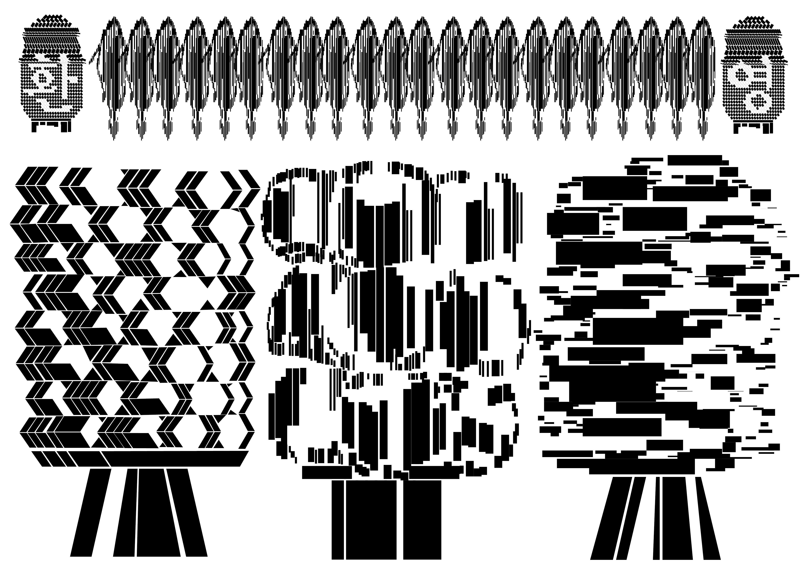

<!DOCTYPE html>
<html lang="en" dir="ltr">
  <head>
    <meta charset="utf-8">
    <title>About Jiyoung</title>
</html>
<head>
<body>
<h1><a href="1.html">STOP ZERO</a></h1>
</body>
</head>
<body>
  <ol>
 <li><a href="index.html" target="blank">Index</a></li>
 <li><a href="2.html" target="blank">Inroduction</a></li>
 <li><a href="3.html">Portfolio</a></li>
</ol>
<h2>Who is Jiyoung?</h2>



<h1>완벽한 오독을 위한</h1>
<p>이곳은 이미지가 가지는 불확실성 속 가능성, <a href="https://vimeo.com/390316891" target="_blank" title="html5 specification"><strong><u>완벽한 오독을 위한</u></strong></a> 영역이다.
<br> 시각 언어는 의미를 규정하지 않고 언제나 해석의 여지 안에서 형용할 뿐이다.
<br>문자, 음표 기호가 몸짓으로 대체되며 말과 몸은 섞여든다.
</p><p
style="magin-top:10px;">This is an area for perfect misreading, a possibility in the uncertainty of the image.
<br>Visual language does not define meaning, but always adjectives within interpretation.
<br>Letters and notes are replaced by gestures, and symbols and bodies are mixed.
</p>
</body>
